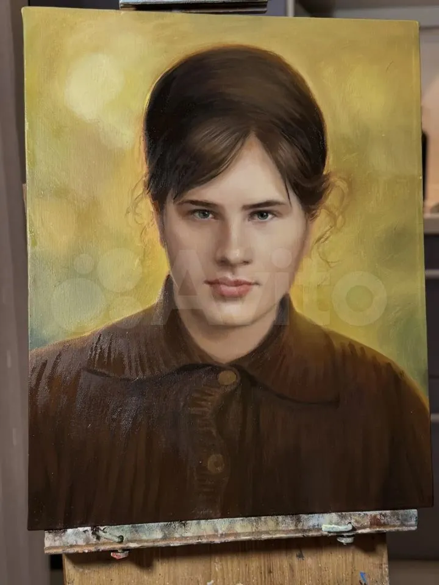
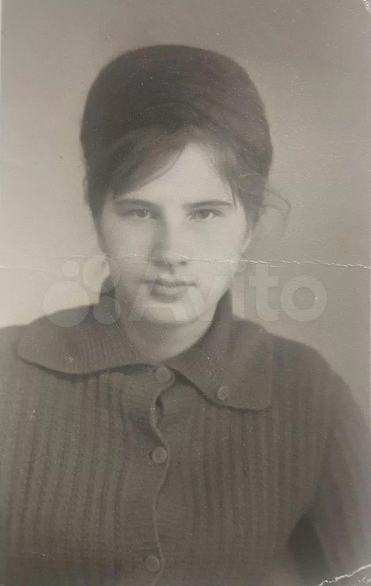

01Добавить реальную работу
Личный портрет
- Формат
- —
- Срок
- —
- Повод
- —
Живопись · портрет · наследие
Пишу маслом по вашим фотографиям — тех, кого любят, и моменты, которые хочется оставить надолго. Каждый портрет веду лично: от первого разговора и поиска образа до фотоотчётов и бережного вручения.
Сходство рождается
на эскизе. Характер — в живописи.
Академическая школаРостов-на-Дону
Ростовское художественное училище им. М. Б. Грекова
Художественный институт им. В. И. Сурикова, Москва
Избранные работы
Выберите сюжет — я покажу работы, близкие вашей будущей картине по настроению и задаче.
Показано 10 работ

03Оригинальная работа«Точность сходства мы закрепляем на эскизе, а душу портрету даёт живой мазок, свет и характер».
Я работаю в академической традиции: внимательно собираю образ по фотографиям, выстраиваю композицию и только после согласования переношу её на холст. Стоимость фиксирую до первого мазка — в процессе она не меняется.
Сюжеты
Три сюжета, с которых обычно начинается разговор о будущем портрете.
Из семейного архива → в живопись
Даже по старому чёрно-белому снимку я могу восстановить образ, собрать цвет и написать живой портрет маслом.

Архивный снимокПортрет пишется неделями и живёт поколениями. Поэтому каждый этап прозрачен.
Обсуждаем человека, повод, интерьер и вместе выбираем сильные фотографии.
Предоплата 50% закрепляет место в графике и фиксирует срок сдачи.
Композицию меняем без ограничений, пока вы не скажете: «Да, это оно».
Масло, слой за слоем. На каждом этапе вы получаете фотоотчёт.
Багет, подарочная упаковка и личное вручение или доставка по России.
Спокойно от начала до конца
К живописи приступаю только после того, как вы утвердили композицию и сходство на эскизе.
Стоимость фиксирую до первого мазка. Ни материалы, ни правки её потом не сдвинут.
Эскиз меняю столько раз, сколько нужно, — пока вы не скажете: да, это он.
Отзывы
Я публикую отзывы только с согласия клиентов — так же бережно, как фотографии готовых портретов.
Юля, очень благодарна за картину. Она изумительная — красивая, воздушная и с душой. На фотографии, напечатанной на холсте, души нет, а написанная красками картина её имеет. Это небо и земля! Благодарю за такой необыкновенный подарок.
Анастасия · портрет по фотографии · Avito
Моя сестра заказала картину у Юлии, и это был отличный выбор. Юлия постоянно держала нас в курсе процесса, аккуратно собирала детали по крупицам с разных фотографий, чтобы передать всё важное. Только она смогла реализовать идею именно так, как хотелось. Очень довольны результатом и благодарны за профессионализм и внимательность!
Клиентка · композиция из разных фотографий · Avito
Безмерно благодарна Юлии за праздник души. Обратилась за портретом маме на 75 лет — маслом на холсте. Даже представить не могла, что так можно передать взгляд, черты и цвета по чёрно-белой фотографии. Мама даже всплакнула от восторга. Работа выполнена в срок. Однозначно рекомендую художника!
Татьяна · портрет мамы к 75-летию · Avito
Всё учтено, что просили, и сходство! Именинник был растроган.
Олеся · портрет в подарок · Avito
Юлия прекрасно умеет работать с цветами и композицией. Эта работа особенно зацепила.
Тарас · коллекционер живописи · Avito
Муж был в восторге!
Елена · портрет мужа с сыном · Avito
Форматы и стоимость
Все цены — за погрудный портрет одного человека на нейтральном фоне.
Само произведение
от 22 000 ₽
Выбор большинства
Готов к вручению
от 30 000 ₽
Семейная реликвия
от 44 000 ₽
Быстрый ориентир
Точную сумму я фиксирую после просмотра фотографий — до начала работы.
| Формат | Холст | Подарок | Наследие | Срок |
|---|---|---|---|---|
| 30 × 40 | 22 000 | 30 000 | 44 000 | 2–3 недели |
| 40 × 50 | 32 000 | 40 000 | 54 000 | 3–4 недели |
| 50 × 60 | 42 000 | 50 000 | 64 000 | 4–5 недель |
| 50 × 70 | 48 000 | 56 000 | 70 000 | 4–5 недель |
| 60 × 80 | 65 000 | 77 000 | 95 000 | 5–6 недель |
| 80 × 100 | 95 000 | 107 000 | 125 000 | 6–8 недель |
Подарочный сертификат
Когда хочется подарить работу маслом, но фотографии и формат лучше выбрать вместе с тем, кому она предназначена.
Конкретный формат и пакет или просто сумму — я подскажу, что во что складывается.
Электронный в тот же день или печатный на плотной бумаге — как удобнее вручить.
Повод и дата — на ваше усмотрение. К сертификату прилагаю короткое пояснение для получателя.
Присылает фотографии, вместе выбираем сюжет и формат в пределах номинала.
Тот же путь: эскиз на утверждение, фотоотчёты, готовая работа лично или с доставкой.
Сроки
Портрет создаётся неделями и живёт поколениями. Это ориентиры — точный срок фиксирую при бронировании.
2–4недели
30×40 · 40×50
4–5недель
50×60 · 50×70
5–8недель
60×80 · 80×100
К праздничной дате бронируйте за 5–6 недель — я пишу по одному портрету за раз. Сертификат снимает вопрос срока: подарок вручаете вовремя, а работа пишется, когда получатель выберет фотографии.
Оценка фотографий — бесплатно
и до всяких обязательств
О фотографии и сходстве
Пришлите несколько снимков — я посмотрю и честно скажу, из какого получится выразительный портрет.
Вопросы и ответы
Самое важное о сроках, сходстве, оплате и доставке.
От 2–3 недель для камерного формата до 6–8 недель для крупного. К праздничной дате лучше бронировать за 5–6 недель.
Сходство закладывается на эскизе, который вы утверждаете до живописи. Фотоотчёты позволяют сверяться по ходу работы.
Да. Я соединяю на одном холсте людей, которые никогда не фотографировались вместе. Такую композицию рассчитываю индивидуально.
Да. Для реконструкции образа используются архивные фото, рассказы о цвете глаз и волос, снимки родственников. Возможный результат обсуждается заранее.
В жёсткой упаковке, защищающей холст и багет. Перед отправкой вы получите фотографию упакованной работы.
Да, по договорённости: например, 50% при бронировании, 25% после утверждения эскиза и 25% по готовности перед отправкой.
Начать разговор
Соберите короткую заявку и выберите мессенджер. Я подготовлю текст — вам останется выбрать наш диалог и отправить сообщение.
Пишу по одному портрету за раз, поэтому к праздникам место лучше занимать заранее.